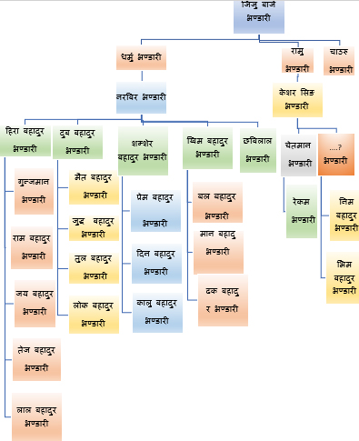
--हिरा बहादुर भण्डारीका छोरा-नातीहरुको नामावली बिवरण:-
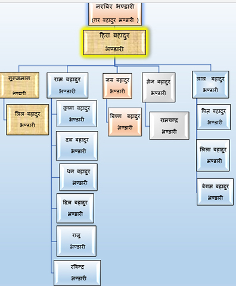
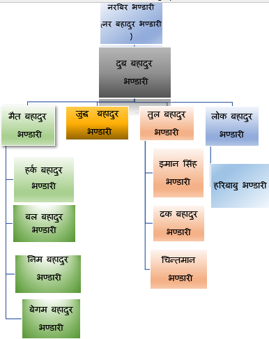
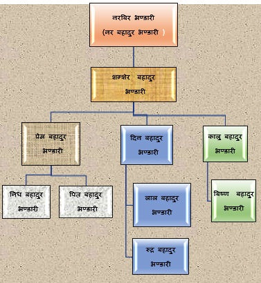
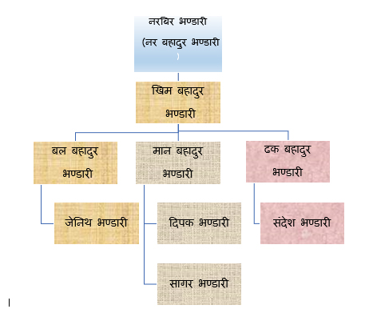
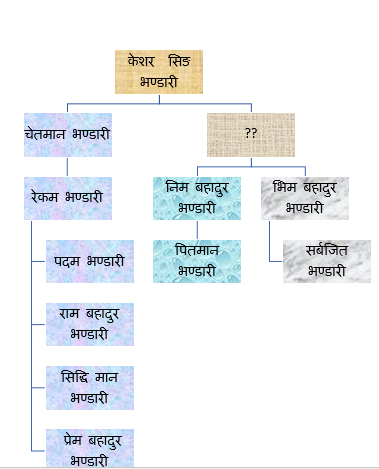
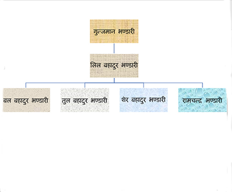
पृष्ठभूमि:-
जिल्ला प्युठान झिमरुक गाउपालिकाको तुषाराका कौशल्य गोत्रिय भण्डारी क्षेत्रीहरु मध्ये केहि परिवारहरु अन्य जिल्लाहरुमा समेत बसाई सराई भइरहेको छ। हाम्रा पुर्खाहरु कुन स्थानबाट कसरी बसाई सरि प्युठान तुषारामा आएका रहेछन भन्ने कुरा एकिन जानकारी नभए पनि नेपालको पूर्व ताप्लेजुंग देखि काठमाडौं तथा ललितपुरका केही स्थानहरू र भक्तपुरक, दोलखा, बाग्लुंग, गुल्मी ,रुकुम र दांगमा समेत कौशल्य गोत्रका भण्डारी क्षेत्रीहरुको बसोबस रहेको पाइन्छ। हाम्रा पुर्खा धर्मु भण्डारी ,रामु भण्डारी र भक्तु भण्डारीहरुका बुवा (मलाई नाम थाहा नभएको हुनाले )प्युठानमा कहाँदेखि कहिले कसरी बसाई सरि आएकाहुन भन्ने जानकारी नभए पनि हाम्रा पुर्खा (धर्मु भण्डारी ,रामु भण्डारी र भक्तु भण्डारीका) बुवा तत्कालिन सरकारी कर्मचारी भएको हुनाले सरकारी कामको सिलसिलामा प्युठानमा कार्यरत हुँदा निजका तिन भाई छोराहरु (धर्मु ,रामु र भक्तु ) को जन्म भएको केही वर्ष पछी पति-पत्नि दुबैजनाको प्युठानमा मृत्यु भएकोले बालकहरु धर्मु भण्डारी ,रामु भण्डारी र भक्तु भण्डारीहरु बुवाको निधन पछि प्युठान तुषारामा बसेका रहेछ्न् । हाम्रा पुर्खाहरु धर्मु भण्डारी ,रामु भण्डारी र भक्तु भण्डारी तुषारामा आएको केहि बर्ष पछि कान्छो भक्तु भण्डारीको सानो उमेरमा निधन भएकोरहेछ।
तत्कालिन राणा शासन कालको समयमा नेपालका बिभिन्न स्थानहरुमा बिर्ता जग्गाहरु हुन्थे र ति बिर्ता जग्गाहरुलाई खुवा बिर्ता भनिन्थो। तत्कालिन सरकारलाई बिर्ता जग्गाहरुको कर किसानहरुले राणासरकारलाई बुझाउनु पर्थो र खुवा बिर्ताको कर किसानहरुबाट उठाउने कार्यको लागि तत्कालिन सरकारले कर्मचारीहरु भर्ना गरेका हुन्थे।
धर्मु भण्डारीका छोरा हाम्रा हजुरबुवा नरबिर भण्डारी तत्कालिन राणा सरकारको खुवा उठाउने कर्मचारी (हालको कर उठाउने कर्मचारी जस्तै ) हुनुहुन्थ्यो । राणा कालको समयमा प्रशासनिक र न्यायिक कार्य संचालन गर्न नेपालको पहाडी क्षेत्रलाई २० जिल्ला र तराईक्षेत्रलाई १२ जिल्लामा गरी नेपाललाई जम्मा ३२ जिल्लामा बिभाजन गरिएको थियो । तराईका जिल्लाहरुलाई तहशिल भनिन्थ्यो । ति ३२ जिल्लाहरुलाई हेर्न नेपालमा तिनओटा गौडाहरु (प्रसाशनिक केन्द्र अर्थात हाल नेपालको ७ ओटा प्रदेश भने जस्तै ) थिय। पूर्वक्षेत्रको गौडाको मुकाम धनकुटामा र मध्य क्षेत्रको मुकाम पाल्पा र पश्चिम क्षेत्रको मुकाम डोटीमा थियो। त्यस समयमा गौडाहरुको प्रमुख र प्रशासकहरु राणा हरुका भाई र छोराहरु हुन्थे । मेरो हजुरबुवा नरबिर भण्डारीले त्यसबेला पाल्पा गौडा अन्तर्गत पर्ने विभिन्न स्थानहरुबाट खुवा उठाएर पाल्पाको गौडा सरकारलाई बुझाउने काम गर्नु हुन्थ्यो । यसै खुवा उठाउने सिलसिलामा ताराकोटबाट कान्छी श्रीमतीलाई बिबाह गरेपछि नरबिर भण्डारीका श्रीमतीहरु मध्ये जेठी श्रीमतीबाट हिरा बहादुर भण्डारी र दुब बहादुर भण्डारी दुई भाई छोराहरु र कान्छी श्रीमतीबाट शमशेर बहादुर भण्डारी, खिम बहादुर भण्डारी र छबिलाल भण्डारी तिन भाई छोराहरु गरि नरबिर भण्डारीका जम्मा पाँच भाई छोराहरु हुनुहुदोरहेछ । कान्छा छबिलालको युवाअवस्थामा मृत्यु भएको रहेछ।
रामु भण्डारीका एक मात्र छोरा केशरसिंह भण्डारी हुनुहुदोरहेछ । केशरसिंह भण्डारीका दुई भाई छोराहरु चेतमान भण्डारी र कृप बहादुर भण्डारी हुनुहुदोरहेछ ।
गोत्र, प्रवर र थरहरु:-
(नोट :- यस शिर्षक अन्तर्गत गोत्र, परवर र थरहरुको बिवरणहरु मैले विभिन्न पत्र-पत्रिकाहरु पुस्तकहरु र, विभिन्न ब्यक्तिहरूका लेखहरुबाट साभार ,सङ्कलन र एकिकृतगरि संक्षिप्त रुपमा तयार पारेको हुँदा यस्मा कसैको फरक बिचार हुन सक्छ ।)
गोत्र:-
गोत्र सब्दको अर्थ बंशवली हुन्छ । हिन्दु परम्पराअनुसार प्रत्येक थरहरुलाई कुनै न कुनै एक ऋषिसंग सम्बन्ध देखाईएको हुन्छ। सप्तऋषिहरु वा अन्य कुनै प्रख्यात ऋषिहरुलाई गुरु मानेर वा कुनै ऋषिबाट प्रभाबित भएर सोहि ऋषिको नामसंग आफ्नो नाता सम्बन्ध जोडी आफ्नो सन्ततीहरुको बंश पहिचानलाई निरन्तरता दिने उदेश्यले गोत्रको प्रचलन भएको हुनसक्ने बुझिन्छ।प्रवरको खास अर्थ सर्बश्रेष्ठ हुन्छ। कुनै मूल ऋषिको बंशमा आफ्नो कर्मद्वारा कुनै ऋषि महान भयो भने त्यस ऋषिलाई प्रवरको रुपमा मानिन्छ। प्रवर भन्नाले मुख्य ऋषि अन्तरगत गोत्रलाई फैलाउने ,बढाउने वा प्रचार प्रसार कार्यगर्ने प्रख्यात ऋषि बिशेषहरुलाई प्रवरको रुपमा मानिन्छ। एउटा गोत्र अन्तरगत ,तिन ,पाँच वा सात वटा सम्म प्रवारहरु भएको पाइन्छ। कौशल्य गोत्र भएका थरहरुका तिनवटा (१ )आगस्त्य (२ )माहेन्द्र (३ )मयोभुव प्रवरहरु हुन्छन। एउटै गोत्र र एकै प्रवर अन्तरगत पनि बिभिन्न थरहरु रहेका हुन्छन। जस्तै नेपालमा कौशल्य गोत्र भएका निम्न लिखित थरहरु भएको पाइन्छ। अर्थात नेपालमा बस्ने निम्न लिखित थरहरुले कौशल्य गोत्र मानेको पाइन्छ, जस्तै:- भण्डारी,पाठक, डाँगी, थामी,भाम , महतारा ,बोगटी ,बुडथापा ,बडुवाल ,हैताल ,घर्ति आदि। तर नेपालको विभिन्न स्थानहरुमा रहेका ब्रामण र क्षेत्रीका थरहरुमा एउटै भण्डारी थरहरुको पनि गोत्र र प्रवर फरक फरक भएको पाइन्छ। जस्तै:-
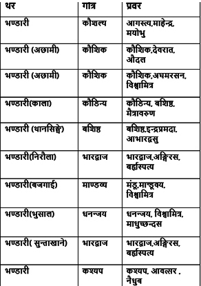
जात र थर:-
हिन्दु परम्परा अनुसार जात र थरहरुको प्रचलन सुरुहुन पूर्व व्यक्तिहरुको पहिचान नाम र गोत्रको आधारमा मात्र हुने गर्दथ्यो। त्यसपछि व्यक्तिहरुको पहिचान सरलीकरण गर्न ब्राह्मण, क्षेत्री , बैश्व र शुद्र जस्ता जातको प्रचलन सुरु भएको गरेको बुझ्न सकिन्छ। पछि जनसंख्याको बृद्धि संगै व्यक्तिहरुको पहिचान अझै सरलीकरण र स्पष्ट बनाउन केहि सरकारी दर्जा बाट र केहि गाउँ को नामबाट अपभ्र्म्स भएर थरहरु बनेका छन। जस्तो कर्णाली र नेपालको सुदुरपश्चिमका गाउँ को नाम बाट अपभ्र्म्स भएर बनेका थरहरुमा रिजाल, कोइराला, पराजुली जस्ता थरहरु हुन् भने सरकारी दर्जा बाट उत्पत्ति भएका थरहरुमा कार्की , भण्डारी ,भट्ट , थापा बस्नेत आदि थरहरु हुन् । पुर्ख्यौली बास्यस्थानको आधारमा प्रचलनमा आएका थरहरु जस्तै :-
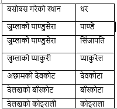
सरकारी दर्जा वा पद बाट उत्पति भएका थरहरु :-
भण्डारी थर परापुर्ब कालमा राजकीय सरकारी पद वा दर्जाको आधारमा उत्पति भएको थर हो। परापुर्ब कालका राजकीय सरकार गठन र संचालनको लागि हालको जस्तो मन्त्रालयहरुको कार्य प्रचलनमा नआएको हुँदा सो समयमा कार्य संचालनको लागि भिभिन्न थरहरुका व्यक्तिहरुलाई सरकारी अङ्गहरुको प्रमुखको पदहरुमा जिम्वेवारी तोकिने प्रचलन रहेको थियो। सो समयमा कोष तथा अर्थ प्रमुख (हालको अर्थ मन्त्रालयको अर्थ मन्त्रि जस्तै पद )को कार्य भण्डारी थरका व्यक्तिहरुले गर्ने प्रचलन रहेको देखिन्छ।
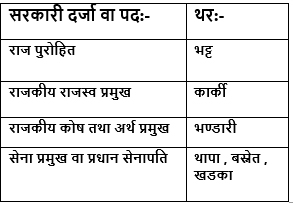
नोट:- हाम्रा पुर्खाहरु तत्कालिन जुम्ला को सिंजा राज्य को राजकिय सरकारी पद वा दर्जा को जिम्मेवारी को कारणले हाम्रो भण्डारी थर पदवी सिंजा राज्य बाट सुरु भएको हुनसक्ने हुँदा हामी भण्डारी हरुलाइ सिंजापति भण्डारी भनिएको हुन सक्छ
कौशल्य गोत्र:- कौशल्य गोत्र कौशल्य ऋषि सँग सम्बन्ध जोडिएको गोत्र हो। पौराणिक मान्यता अनुसार कौशल्य ऋषि ब्रमाण्डका सृष्टिकर्ता ब्रह्माका सन्तान हुन् जसले पृथ्वीमा पहिलो मानव जतिको उत्पति गरेको विस्वास गरिन्छ। कौशल्य गोत्र भएका थरहरु नेपालको साथै भारतमा पनि रहेको पाइन्छ। भाषागत रुपमा हिन्दुहरुको महान चाड दशैँलाई नेपालमा दशैँ र भारतमा दशहरा भने जस्तै कौशल्य गोत्रलाई भारतका केहि थरहरुले कौशल गोत्र भन्ने चलन रहेको देखिन्छ। भारतमा कौशल्य गोत्र मान्ने थरहरु कपुर ,मलहोत्रा ,मेहरा ,मेहता ,खन्ना ,चोपडा ,कुन्द्रा, बोहरा ,भल्ला ,माकन ,हाडा ,कत्याल ,देव आदि रहेकाछन् भने नेपालमा भण्डारी,पाठक, डाँगी, थामी, भाम , महतारा ,बोगटी ,बुडथापा ,बडुवाल ,हैताल, घर्ति,आदि थरहरु रहेकाछन्। नेपालमा रहेका केहि थरहरुले कौशल्य गोत्रलाई कौशिल्य गोत्र भन्ने चलन रहेको देखिन्छ।
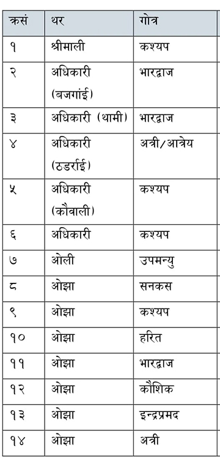
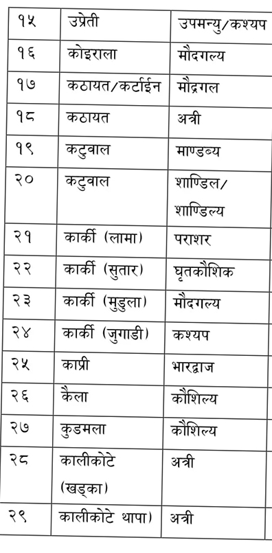
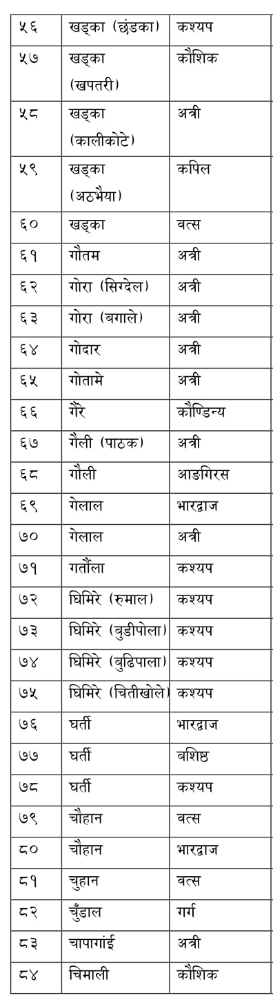
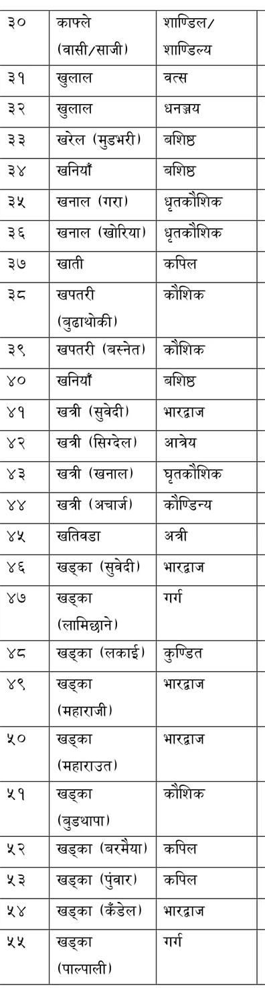
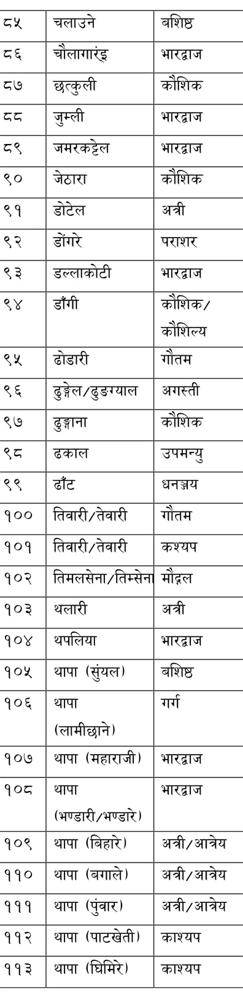
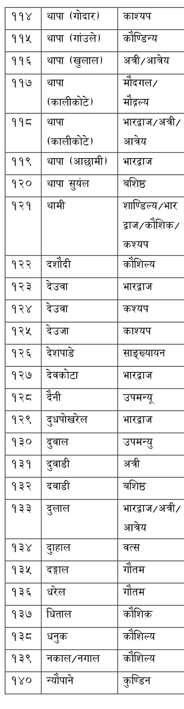
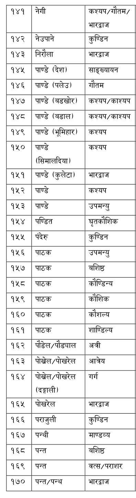
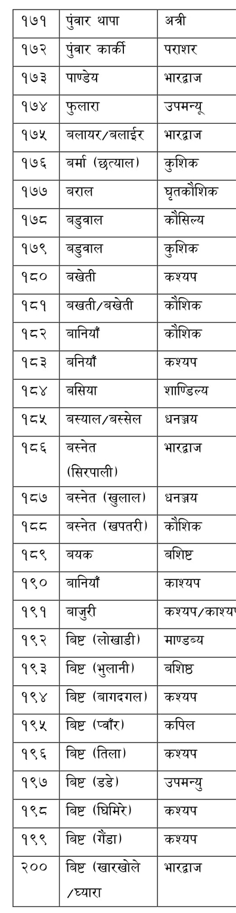
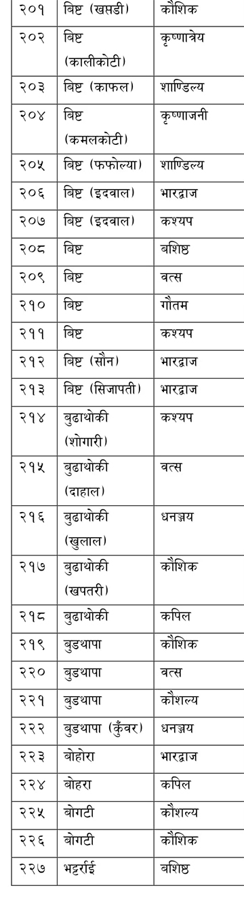
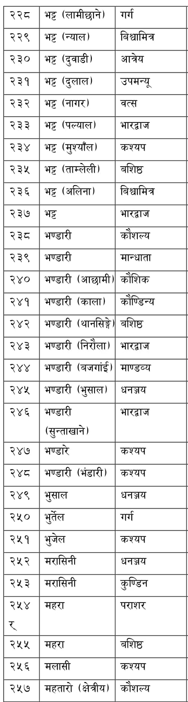
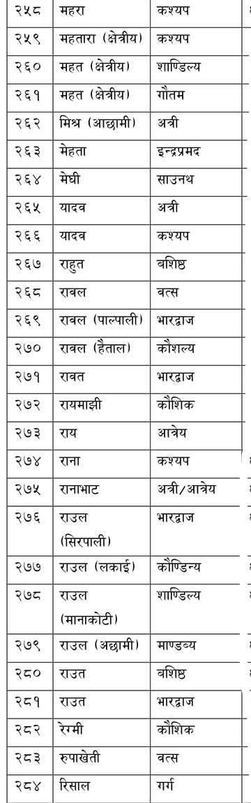
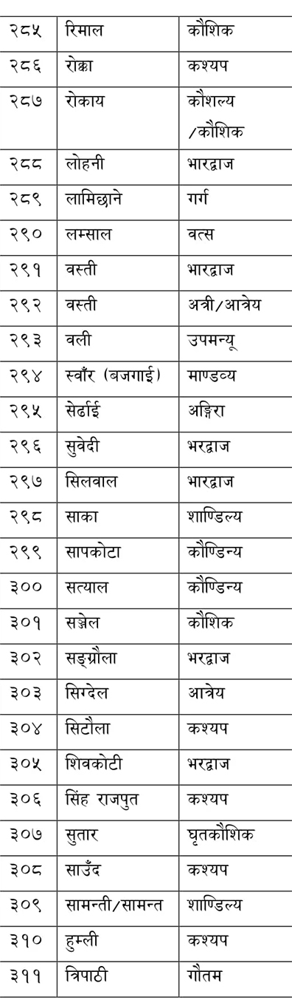